テスト中このページはリニューアルのテスト版です。掲載内容は確認中のものを含みます。
SHIRAKAWA, FUKUSHIMA — SINCE 1991
電気と、通信と、音を。
白河から、確かな仕事で。
白河から、
電気工事・防災無線・空調・ネットワークから、音響・照明、ホール設備まで。設計・施工から保守点検まで、一貫してお任せいただけます。
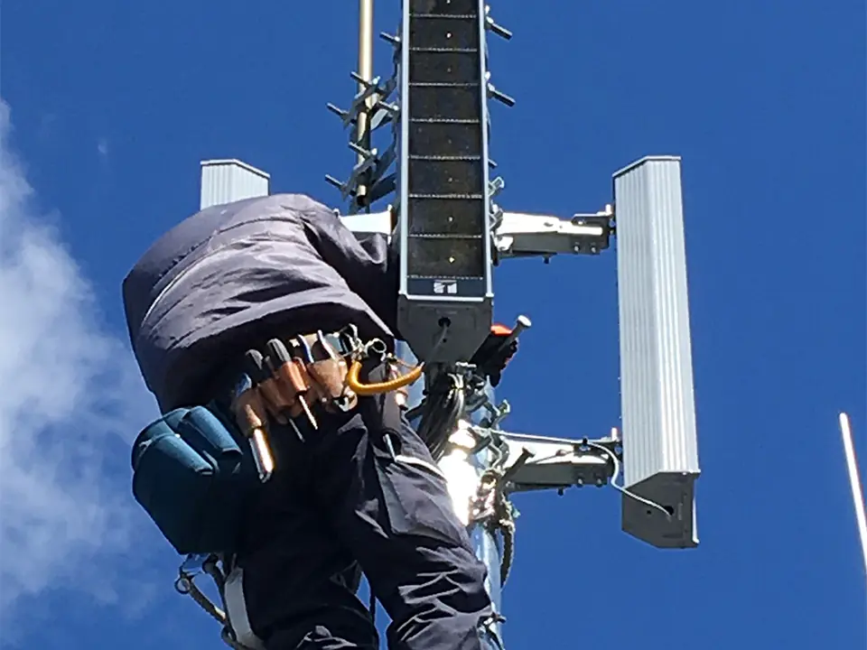
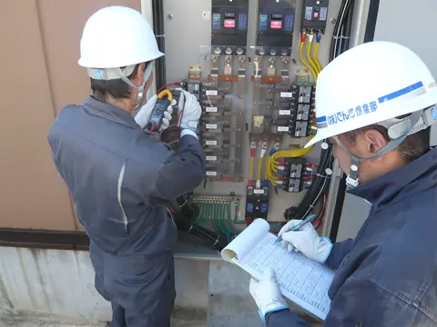
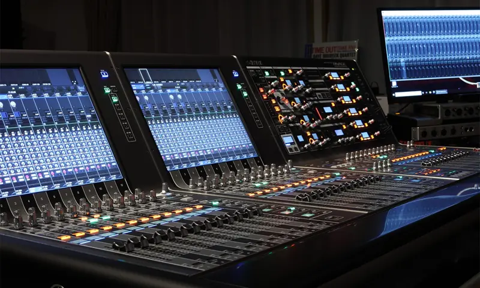
- FOUNDED1991年創業平成3年4月26日
- LICENSE福島県知事許可電気工事業・電気通信工事業（般-5）第27207号
- BASES白河市 本社・配送センターほか矢吹町に倉庫
- FIELDS電気・通信・空調・音響7つの事業を一社で
01SERVICE
事業内容
建物の電気から、地域の防災無線、ホールの音響まで。「電気を通すもの」をつくり、点検し、動かし続けるのが私たちの仕事です。
設備をつくる・守る
建物・施設・地域のインフラ
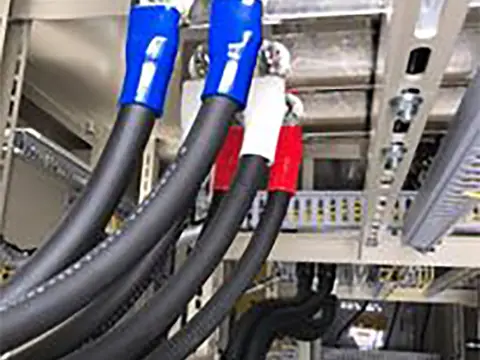
電気工事
建物や施設の電気設備をつくります。引込線から盤、配線まで。高圧ケーブルの工事にも対応します。
詳しく見る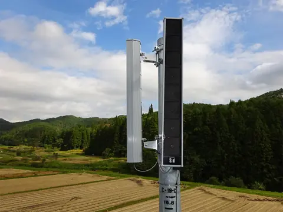
電気通信・防災無線
災害時に情報を地域へ届ける防災無線を、無線設備・鉄塔・アンテナ設置から総合試験まで一貫して整備します。
詳しく見る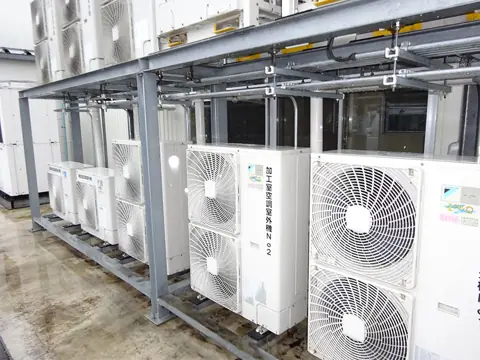
空調設備
業務用のガスヒートポンプ（GHP）からご家庭のルームエアコンまで。設計・施工・メンテナンスを承ります。
詳しく見る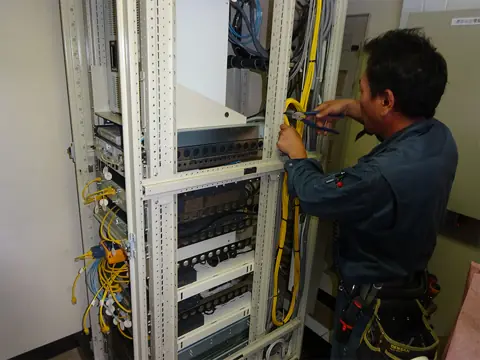
ネットワーク構築・保守
LAN・光ファイバーの配線から機器の導入、運用・保守まで。事業所や施設のネットワークを支えます。
詳しく見る音と場をつくる
ホール・イベント・式典
02STRENGTH
私たちの強み
規模の大きさではなく、現場ひとつひとつの確かさで信頼をいただいてきました。
技術力
電気・通信・空調、そして音響。分野をまたぐ設備を、ひとつの会社の技術でつなぎます。
第一種電気工事／高圧ケーブル工事技能認定／舞台機構音響調整士 ほか
対応力
大規模な設備工事だけでなく、小さな工事や修繕・修理のご相談にも、すぐに動ける体制を整えています。
電話一本でご相談ください
地域密着
白河に本社と配送センターを構えて30年あまり。地域の祭りや催しの音響も、私たちの仕事です。
1991年創業／白河市・矢吹町に拠点
安全管理
高所・重機・電気。危険と隣り合わせの現場だからこそ、教育と資格で安全を積み上げています。
職長・安全衛生責任者／フルハーネス特別教育／高所作業車 ほか
03WORKS
施工実績
現場の写真とともに、工事の内容をご紹介します。掲載内容は要確認
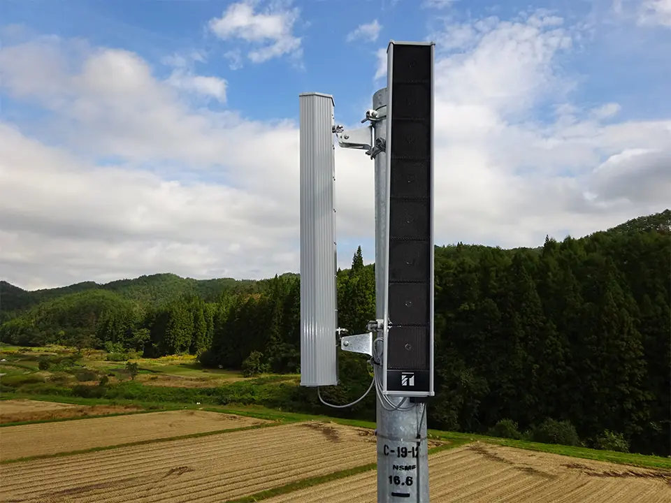
電気通信 / 防災無線
防災無線 屋外拡声設備の設置
- 地域
- 要確認
- 概要
- スピーカー柱・無線設備の設置、総合試験
- 時期
- 要確認
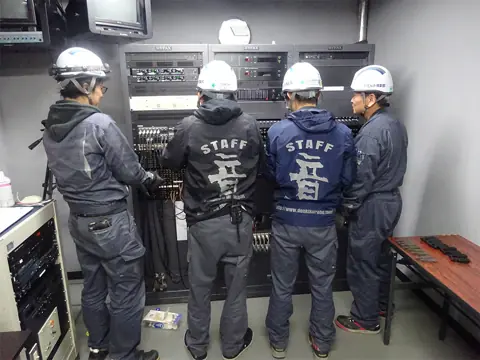
ホール設備
ホール音響設備の保守点検
- 施設
- 要確認
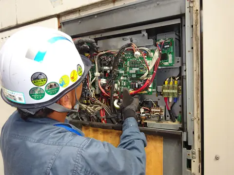
空調設備
業務用空調機のメンテナンス
- 施設
- 要確認
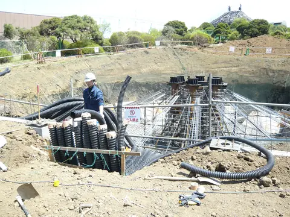
電気工事
地中電線路のケーブル敷設
- 地域
- 要確認
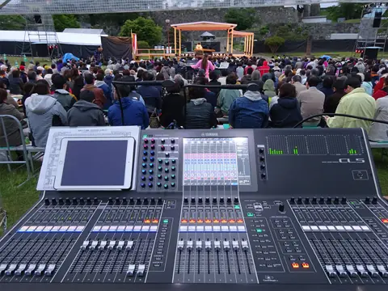
音響・PA
野外イベントの音響運営
- 催し
- 要確認
※ 施設名・地域の掲載は、お客様の許可をいただいたものに限ります。
施工実績をすべて見る04REASON
選ばれる理由は、
許可と資格に表れています。
公共の防災設備から、ホールの舞台音響まで。求められる許可・登録と、現場ごとに必要な資格をそろえて工事にあたります。
QUALIFICATIONS — 主な取得資格
- 第一種電気工事
- 第二種電気工事
- 高圧ケーブル工事技能認定
- 舞台機構音響調整士
- システムチューニング2級（音塾）
- 第三種アマチュア無線技士
- 第二種冷媒フロン類取扱技術
- 冷媒回収技術
- 二級ボイラー技士
- 危険物取扱（第4類）
- 職長・安全衛生責任者
- 高所作業車運転
- 小型移動式クレーン運転
- 玉掛け技能
- 車両系建設機械運転技能
- フルハーネス型安全帯使用（特別教育）
ほか、足場組立・ガス溶接・フォークリフト運転、住宅用太陽光発電システム施工認定など。日本舞台音響家協会 会員。
05COMPANY
会社案内
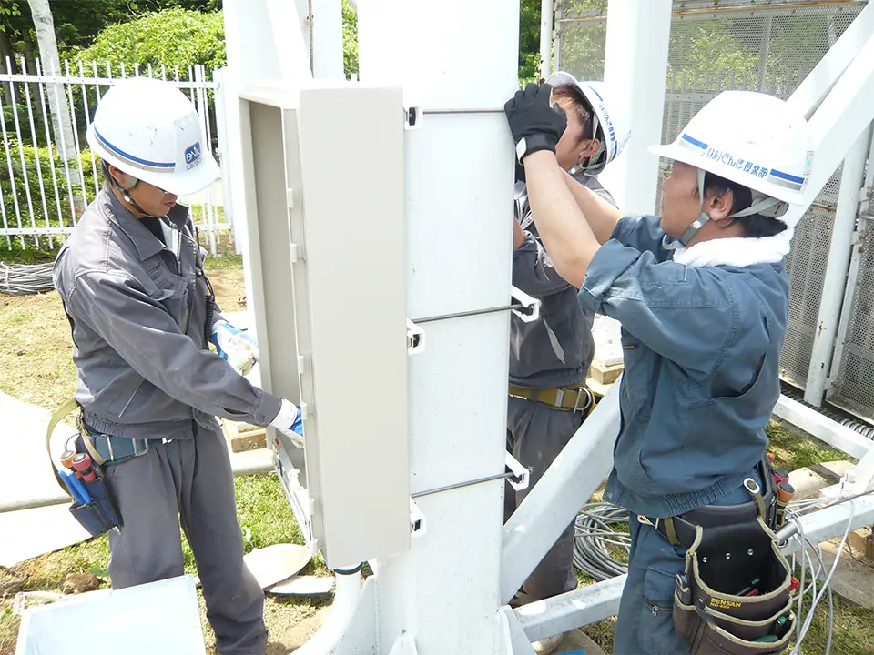
電気を通して、
地域の暮らしと催しを支える。
私たちは1991年の創業以来、「電気というものを通して、皆さまのお役に立つこと」を仕事の軸にしてきました。
白河を拠点に、県内・県外の現場へ。大きな設備工事だけでなく、小さな工事や修理のご相談にも、すぐに応えられる体制を整えています。
つなげているのは、電線や回線だけではありません。その先にある、笑顔です。
代表取締役 中川 勝大 代表メッセージ本文は要確認
| 商号 | 株式会社でんき倶楽部 |
|---|---|
| 代表者 | 代表取締役 中川 勝大 |
| 創業 | 平成3年（1991年）4月26日 |
| 資本金 | 500万円 |
| 本社 | 〒961-0046 福島県白河市土武塚25 |
| 配送センター | 〒961-0041 福島県白河市結城106 |
| 倉庫 | 福島県西白河郡矢吹町善郷内238 |
| 電話・FAX | TEL 0248-22-8900／FAX 0248-22-9124 |
| 従業員数 | 要確認 |
- 1991株式会社でんき倶楽部 創業（4月26日）
- —沿革の主な出来事（法人化・事業追加・拠点開設など）は要確認
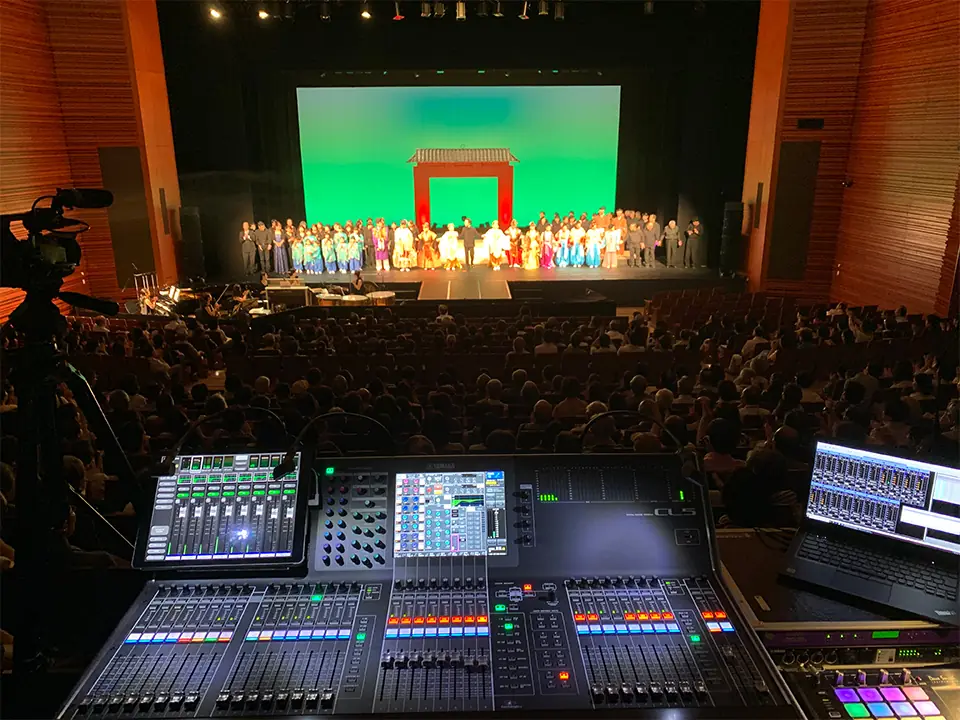
06COMMUNITY
地域の催しを、
音で支える。
地域に根付いたお祭りからホールの公演まで、運営や音響として参加しています。コミュニケーションの道具としての「音」を大切にしています。
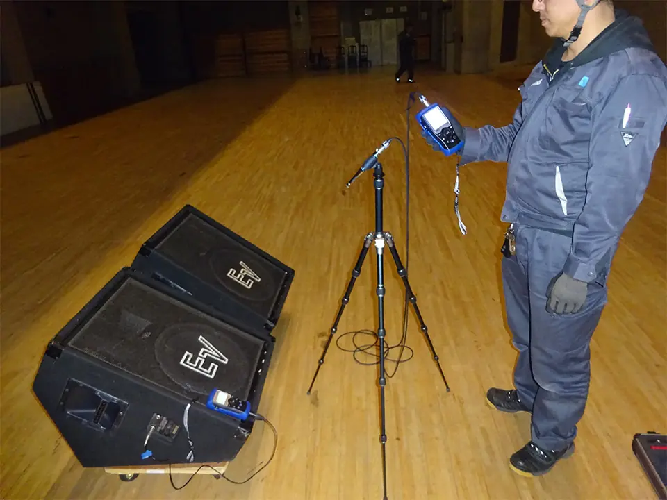
07RECRUIT
電気も、音も。
仕事の幅が、そのまま力になる。
電気工事・通信・空調の現場と、ホールやイベントの音響。ひとつの会社で、いくつもの専門に触れられます。
- 職種・募集状況 要確認
- 資格取得の支援制度 要確認
- 先輩社員の声・写真 要確認（実在の社員のみ掲載）
※ 募集していない時期は、このセクションを非表示にします。
08CONTACT
工事のご相談・
お見積りはこちら
「何を頼めばいいか分からない」段階でも大丈夫です。現場の状況をお聞きして、必要な工事をご提案します。
TEL0248-22-8900- FAX
- 0248-22-9124
- 受付時間
- 平日 8:00–17:00（要確認）
- 定休日
- 土日祝（要確認）
- 対応エリア
- 白河市を中心に、福島県内および県外
- 所在地
- 〒961-0046 福島県白河市土武塚25
Googleマップで見る - スタジオ
- 株式会社音教 0248-24-7000